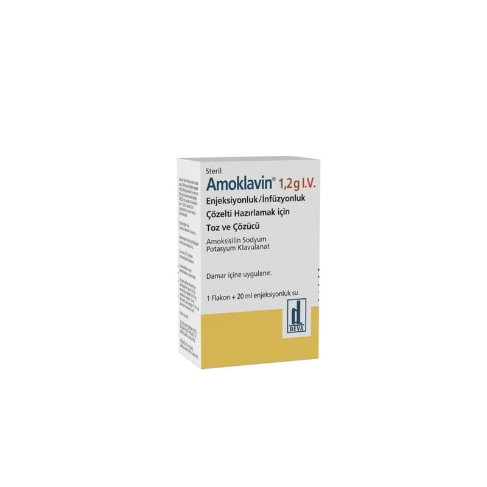

Amoklavin 1000 mg/200 mg IV Enjeksiyonluk/İnfüzyonluk Çözelti Hazırlamak İçin Toz ve Çözücü

Ne için kullanılır
KT · Bölüm 1AMOKLAVİN, bir antibiyotiktir ve enfeksiyona neden olan bakterileri öldürerek etki gösterir. Amoksisilin “penisilin” adı verilen ilaç grubuna dahildir ve amoksisilinin etki göstermesi bazen engellenebilir. Diğer etkin madde (klavulanik asit) ise bu durumun oluşmasını önler.
AMOKLAVİN, enjeksiyon için hemen hemen beyaz-krem renkte toz içeren 1 flakon ve beraberinde 20 ml enjeksiyonluk su içeren ampul şeklinde sunulmaktadır.
AMOKLAVİN, yetişkinlerde ve çocuklarda aşağıdaki enfeksiyonların tedavisinde endikedir: Şiddetli kulak burun boğaz enfeksiyonları Solunum yolu enfeksiyonları
İdrar yolları ile ilgili enfeksiyonlar Kadınlarda genital organ enfeksiyonları Kemik ve eklem enfeksiyonları Deri ve yumuşak doku enfeksiyonları, diş ve diş eti ile ilgili enfeksiyonları dahil Karın içi enfeksiyonlar
AMOKLAVİN ayrıca yetişkin ve çocuklarda majör ameliyatlarda enfeksiyonlardan koruma amaçlı kullanılır.